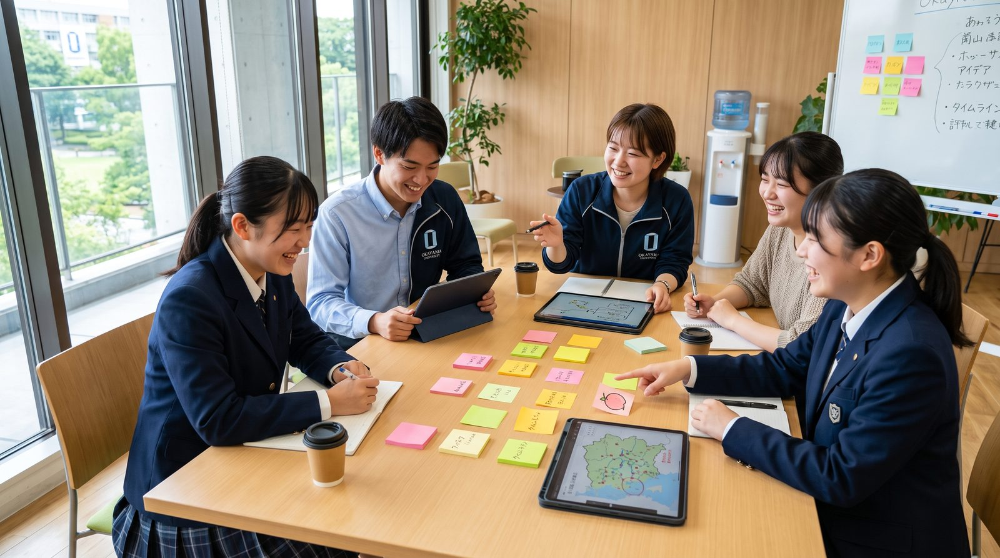

Okayama Local Innovation and Visionary Ecosystem
未来を待つのではなく、私たちが、創る。
岡山の高校・大学・企業・行政・金融・メディアが、ひとつのテーブルにつく。そして決めたことを、実際に動かす。OLIVEは、岡山の人材育成を「話し合い」で終わらせないための、産学官金言のプラットフォームです。
文部科学省「地域構想推進プラットフォーム」構築等推進事業 採択取組
30秒でわかるOLIVE
困っていること、やること、目指す先。この3つだけです。
育てても、
戻ってこない。
岡山の若者は進学で県外へ出て、多くが戻らない。一方で県内企業は、DX・AIを担う人材が足りない。誰もが問題を知っているのに、動かす主体がいなかった。
決めたことを、
現場で動かす。
産学官金言が集まる会議で決めたことを、OLIVEが実務として実行する。大学をまたぐ授業づくり、企業課題を題材にしたPBL、社会人の学び直し。契約も予算も、この法人が引き受ける。
挑戦するなら、
岡山がいい。
小中高から大学、就職、学び直しまで学びが途切れない。県内に面白い仕事があり、若者がそれを知っている。そんな循環を、補助金が終わったあとも自力で回し続ける。

サイトの歩き方
知りたいところから、どうぞ。
OLIVEとは
「協議」と「実装」を隔てる死の谷。そこに橋を架ける2層構造の仕組みと、オリーブという名前に込めた話。
詳しく見る →あなたにとってのOLIVE
大学・高校・自治体・企業・金融・メディア・学生。7つの立場ごとに、できること・得られることをまとめました。
詳しく見る →岡山のいま
若者は戻らず、必要な人材は足りない。数字で見る岡山の構造課題と、2040年の需給ミスマッチ。
詳しく見る →メンバー
産・学・官・金・言。参画機関のカテゴリと、役員会・運営委員会・4部会の組織構成。
詳しく見る →4つの取組
高校改革との連動、高度人材の輩出、需給データの可視化、そして完全自走化モデルの構築。
詳しく見る →これから
令和8年度の体制構築から、令和10年度の自走化まで。そして10年後を見据えたビジョン。
詳しく見る →OLIVE Manifesto
未来を待つのではなく、
私たちが創る。
若者が「挑戦するなら岡山」と選ぶ未来へ、貴機関とともに。
新着